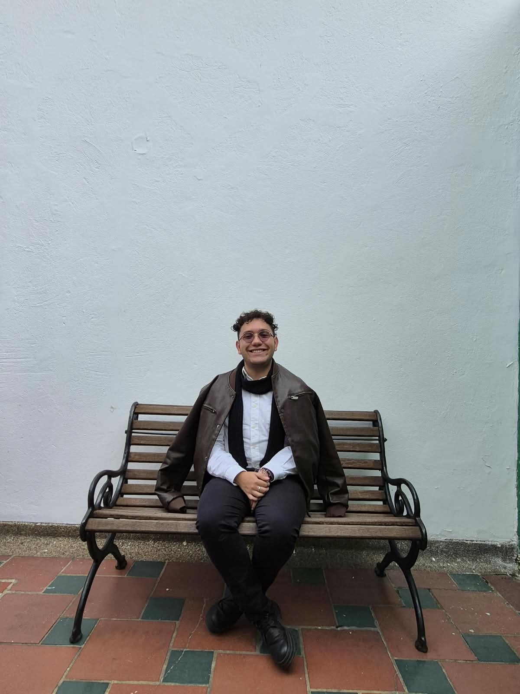
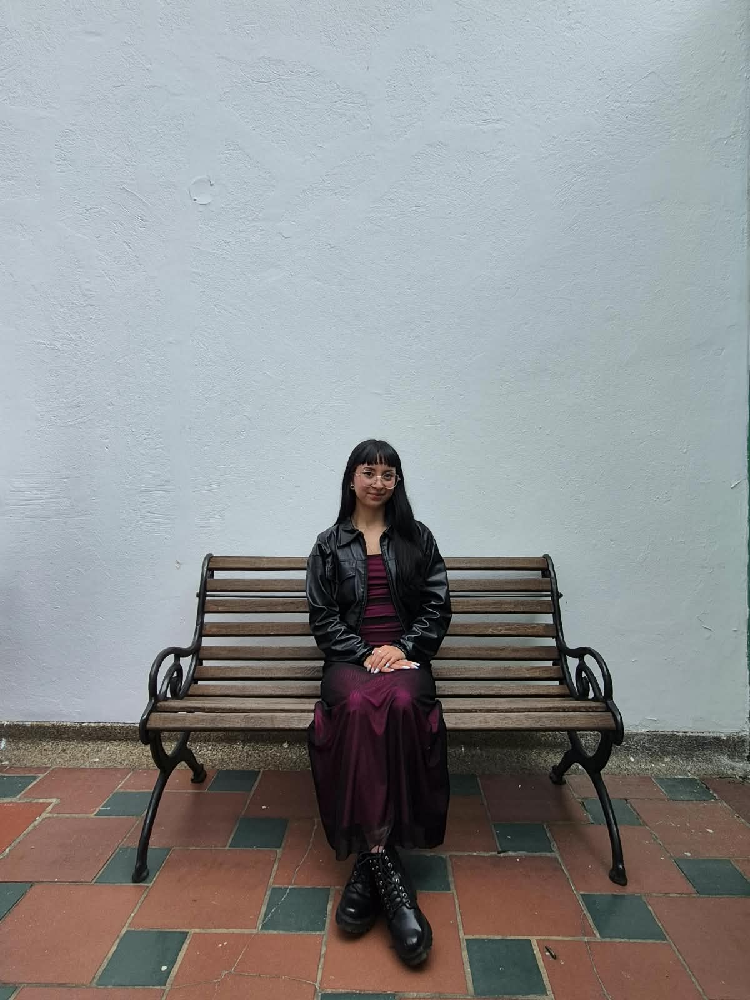
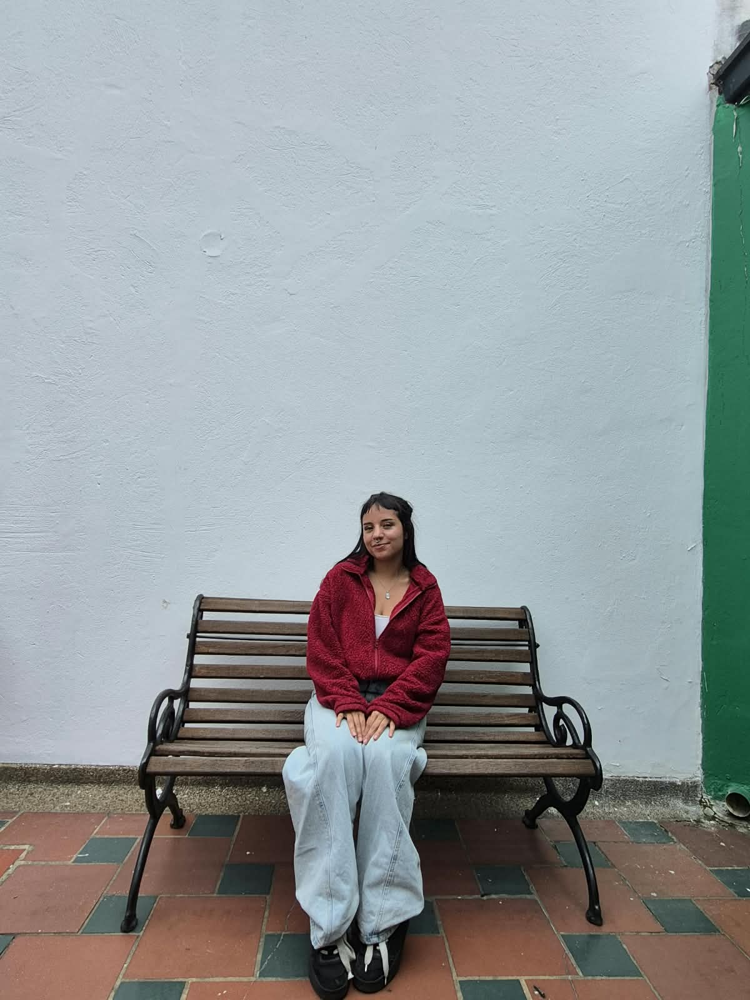
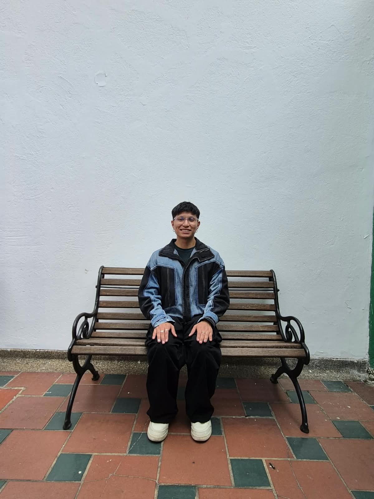
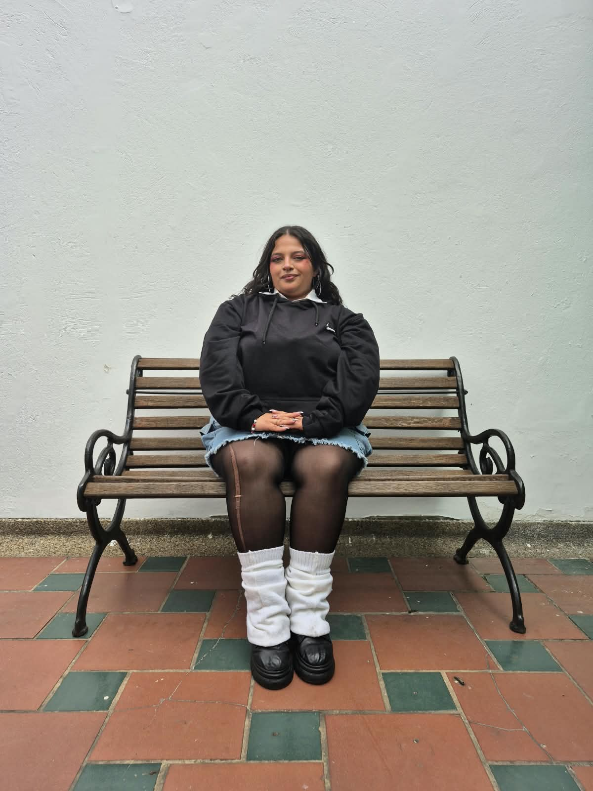
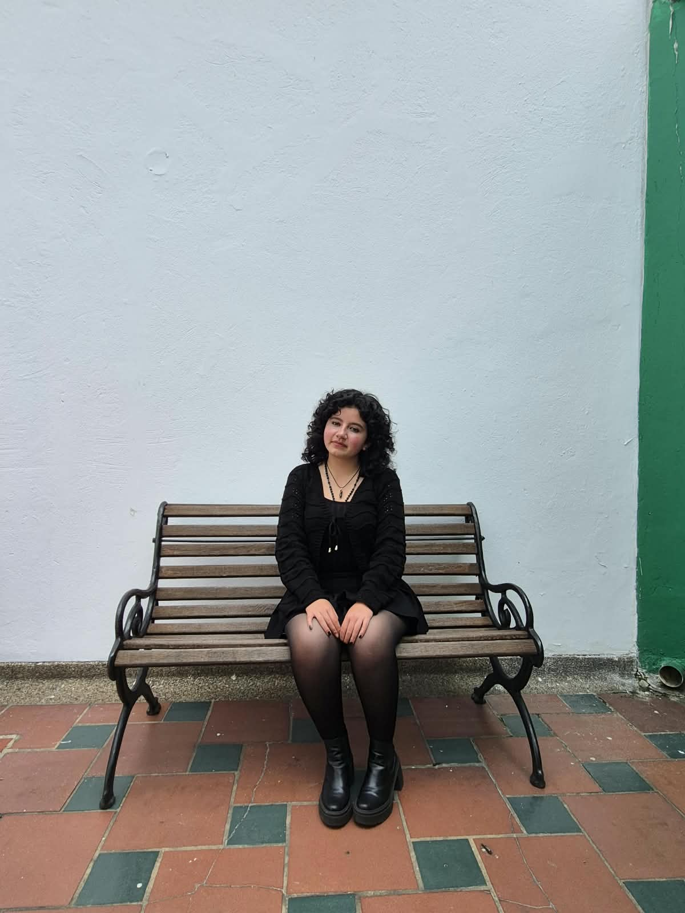

Investigamos
Exploramos fenómenos históricos, sociales, culturales y educativos desde diferentes perspectivas.
Un espacio de formación, investigación y diálogo desde las Ciencias Sociales.

Somos un espacio académico de formación e investigación en Ciencias Sociales, orientado al análisis crítico de las realidades históricas, culturales, políticas y educativas.
La Trinchera Pedagógica busca promover el pensamiento crítico, el diálogo de saberes y la construcción colectiva de conocimiento, reconociendo la investigación como una herramienta para comprender y transformar la realidad social.
La Trinchera Pedagógica surge como un espacio para encontrarnos alrededor de las Ciencias Sociales, compartir preguntas y construir nuevas formas de aproximarnos a la investigación.
Próximamente: historia y trayectoria de la Trinchera Pedagógica.
“Investigar también es preguntarnos quiénes somos, de dónde venimos y qué realidad queremos construir.”
Más que producir información, buscamos generar espacios para pensar, discutir y construir conocimiento.
Exploramos fenómenos históricos, sociales, culturales y educativos desde diferentes perspectivas.
Generamos espacios de discusión, diálogo y pensamiento crítico frente a las problemáticas de nuestro contexto.
Divulgamos conocimientos, investigaciones y producciones académicas dentro y fuera de la universidad.
Apostamos por el trabajo colectivo y por la construcción de conocimiento desde nuestras distintas experiencias.
Espacio destinado a la misión oficial del semillero.
Espacio destinado a la visión oficial del semillero.
Siete estudiantes. Diferentes intereses, preguntas y perspectivas. Un espacio común para investigar.

01Licenciatura en Ciencias Sociales

02Licenciatura en Ciencias Sociales

03
04
06Licenciatura en Ciencias Sociales

07Licenciatura en Ciencias Sociales
Conoce algunos de los trabajos académicos desarrollados por integrantes del semillero.
Ver publicaciones →